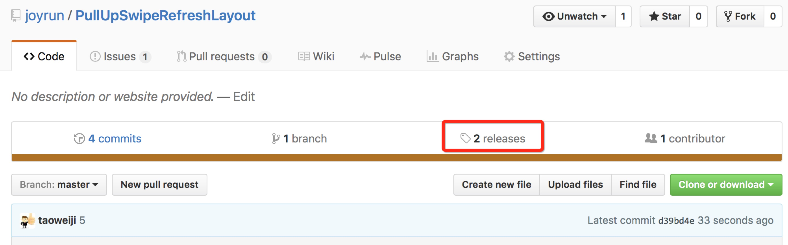
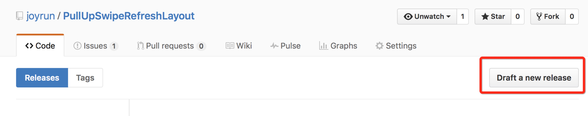
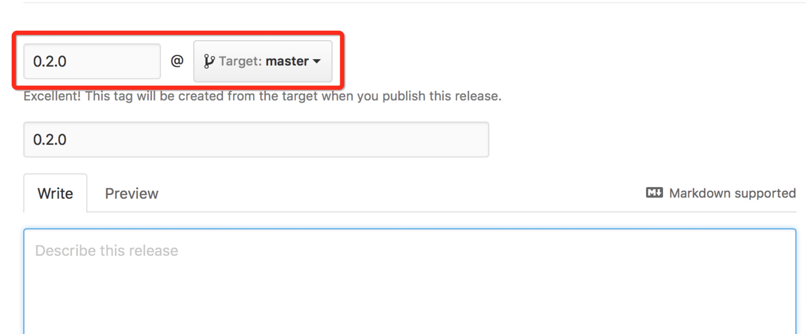
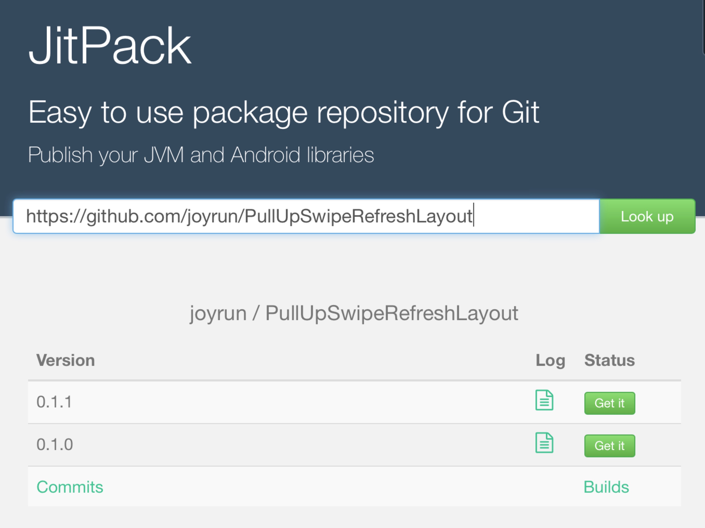
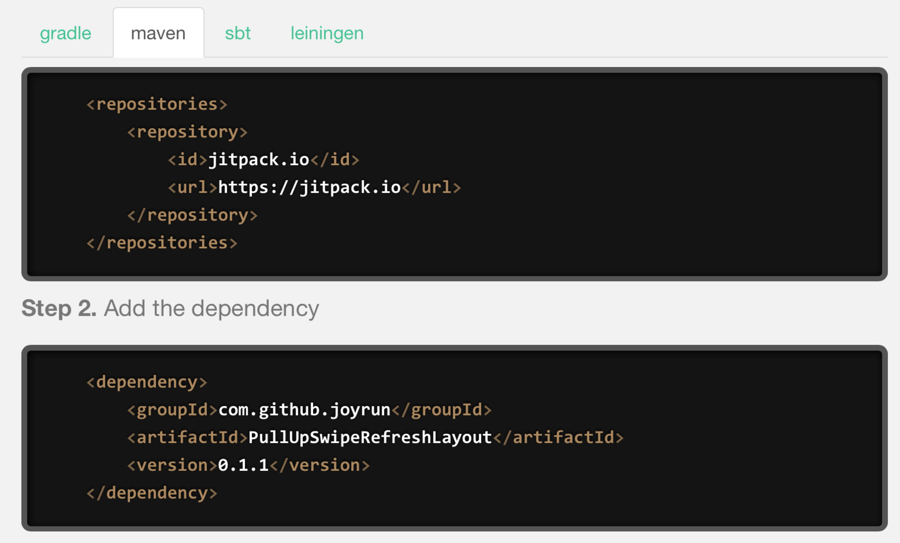

我们经常使用第三方的开源框架，如果我们写的框架或者工具也比较厉害，我们也可以选择开源给别人使用，分享更容易让人成长！
代码管理
毋庸置疑，代码管理首选github，这里就不多说了。
Android、Java项目开源
这里就仅仅介绍如何发布一个Android、Java的项目到 https://jitpack.io Maven库让别人使用。
第一步：配置项目根目录的build.gradle
|
第二步：配置需要发布的Module Lib的build.gradle
|
第三步：发布到github
第四步：创建Release版本
4.1

4.2

4.3

截图
第五步：到 https://jitpack.io 构建

6.2

第六步：添加仓库标识符
把这段Markdown代码放到README.md页面，需要根据项目地址修改。[](https://jitpack.io/#joyrun/PullUpSwipeRefreshLayout)
就可以看到如下效果：
开源协议
一个开源项目，通常都是需要选择一个开源协议，不然别人就不可以随便去使用。通常开源协议的声明在根目录的LICENSE.txt，可以在创建项目的时候就选择好开源协议，或者在github直接创建LICENSE.txt文件，github会给出提示叫你选择开源协议。最常用的开源协议是Apache License 2.0。